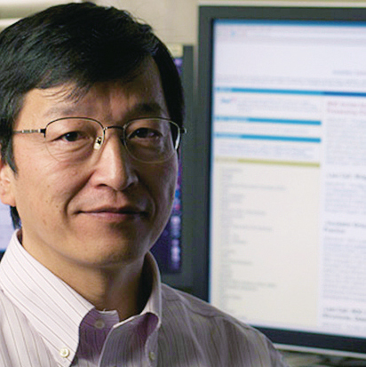
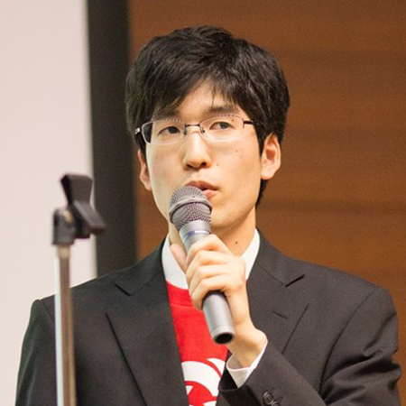
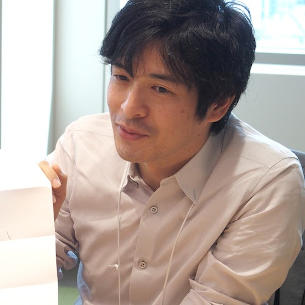
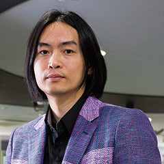
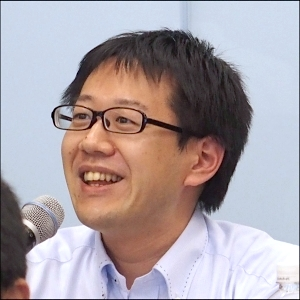
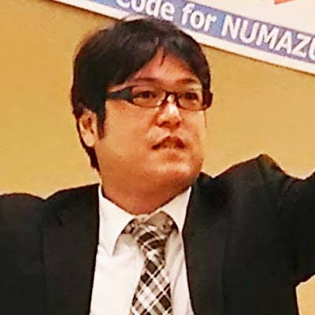

LODチャレンジJapan実行委員会は「Linked Open DataチャレンジJapan2016」を開催するために集まった有志による組織です。
オープンデータおよびLinked Open Dataの公開と活用のためのコミュニティ形成と技術の普及促進を目的として活動しています。
LODチャレンジJapan実行委員会では、一緒に活動して頂ける方を随時募集しています。
地方在住の方も、オンラインでご参加頂くことができます。
データ活用やコンテスト運営に興味のある方、様々な分野の方とのつながりを作りたい方は、ぜひご参加ください。
お問い合わせ先：LODチャレンジ2016事務局 lod@linkdata.org
-

審査委員長
萩野 達也
慶應義塾大学環境情報学部 教授
-

副審査委員長
武田 英明
国立情報学研究所情報学プリンシプル研究系 教授
-

実行委員長
下山 紗代子
一般社団法人リンクデータ 代表理事
-

副実行委員長／関西支部長
古崎 晃司
大阪大学産業科学研究所 准教授
-

副実行委員長
加藤 文彦
国立情報学研究所情報学プリンシプル研究系 特任研究員
-

アライアンス部長
中山 圭太郎
中山データベース合同会社 代表社員
-

広報部長
江上 周作
電気通信大学大学院情報理工学研究科
-

システム部長
込山 悠介
国立情報学研究所コンテンツ科学研究系
-

デザイン部長
小林 巌生
有限会社スコレックス 代表取締役社長
-

技術普及部長
浅野 優
株式会社日立製作所中央研究所 研究員
-

イベント企画部長
石村 彰大
株式会社富士通総研
-

北海道支部長
山口 琢
はこだて未来大学
-
東海支部長
年岡 晃一
中部大学工学部情報工学科 教授
-
飯田 哲
一般財団法人日本情報経済社会推進協会電子情報利活用研究部 主任部員
-

生島 高裕
株式会社数理先端技術研究所 代表取締役
-
上田 洋
株式会社ATR Creative
-

大向 一輝
国立情報学研究所コンテンツ科学研究系 准教授
-
崎川 真澄
朝日新聞社ブランド推進本部
-

白松 俊
名古屋工業大学大学院工学研究科情報工学専攻 准教授
-
鈴木 孝幸
神奈川工科大学情報学部情報工学科 助教
-

中辻 真
NTTレゾナント株式会社
-

中野 圭
大阪芸術大学芸術学部 准教授
-

西村 悟史
国立研究開発法人産業技術総合研究所
-
羽鳥 健太郎
独立行政法人情報処理推進機構戦略企画部 調査役
-
箕谷 祐也
ライタス株式会社 代表取締役社長
-

山本 泰智
ライフサイエンス統合データベースセンター
-
山形 巧哉
北海道森町
-

市川 博之
Code for Numazu代表